支付方式
从2024年6月1日起，您可以同时 添加多个付款方式 。
为绑定付款方式，请填写 个人中心设置 中的所有必填项，并接受要约。
开通LianLian Pay
LianLian Pay 只适用于中国大陆和香港选择人民币（CNY）作为支付货币的卖家。
要开通LianLian Pay方式，请在个人中心中进入 设置 → 合同 → 设置钱包 标签页，在 LianLian Pay 行点击 开通 。
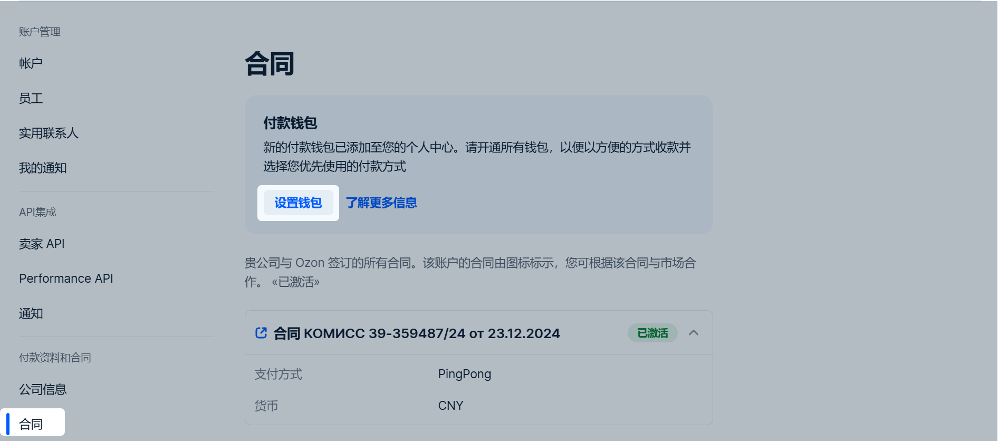
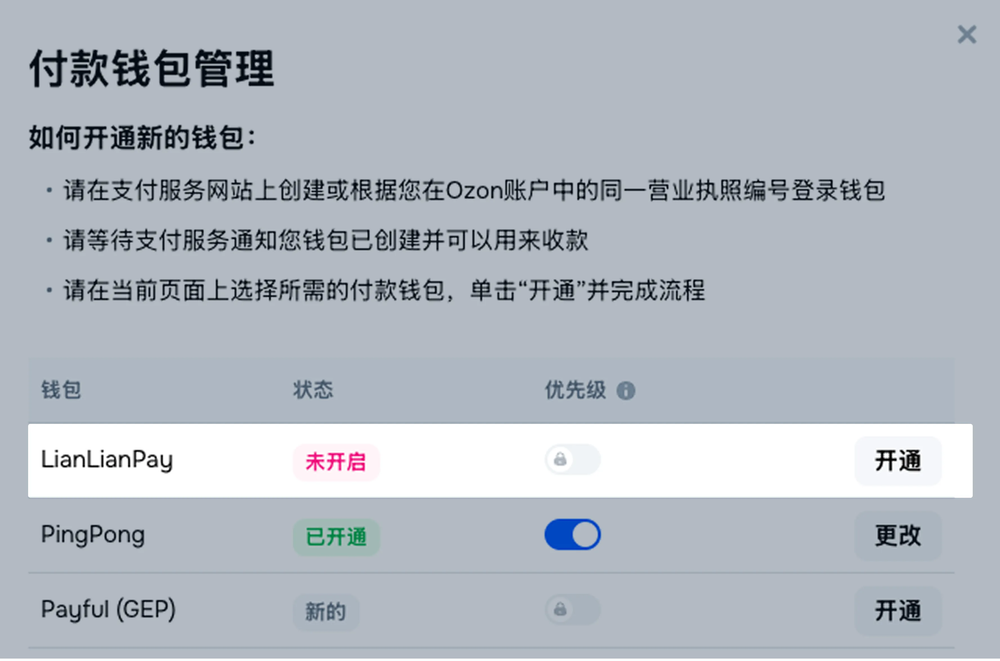
请注册 LianLian Pay 企业帐户或登录到现有账户。请在 LianLian Pay 中指出必要数据，将您的帐户链接到 Ozon 个人中心。在您开通LianLian Pay钱包时，我们将为您分配一名个人管理员。
若您绑定的是现有的连连支付账户，填写详细信息后，我们将需要15分钟来更新您个人中心中的付款方式。 在此期间，请勿再次点击 转至连连付款 。若您注册新的连连支付账户，则必须进行验证。
这通常需要几天的时间。在此期间，请勿再次点击 转至连连付款 。 若验证持续时间超过一周，请确保您已提交所有必要的文件。 如果验证成功，您个人中心中的付款方式将会更新。
LianLian Pay费率
LianLian Pay佣金率为1.2%。
LianLian Pay联系信息
电话: 4000910999
工作时间: 星期一至星期五9:00-22:00, 星期六至星期日9:00-18:00
开通Payful (GEP)
通过Payful (GEP)付款仅适用于货币为CNY/CNH的中国大陆和香港卖家。
要开通Payful (GEP)方式，请在个人中心中进入 设置 → 合同 → 设置钱包 标签页，在 Payful (GEP)行点击开通 。
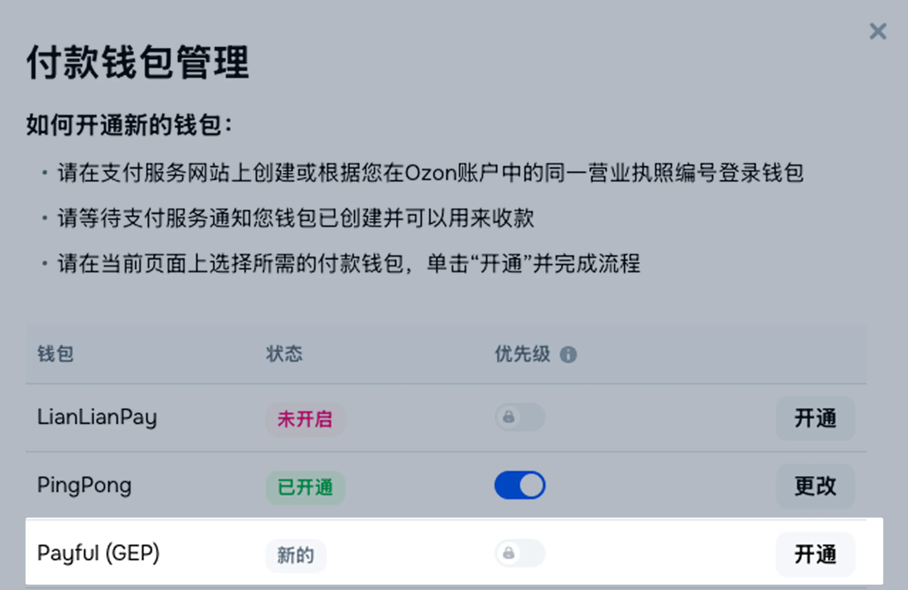
请注册Payful (GEP)企业账户或登录现有账户，填写信息将您的账户绑定到Ozon个人中心。开通Payful (GEP)钱包后，您将拥有专属Payful (GEP)客户经理。
如果您绑定的是已有的Payful (GEP)账户，填写信息后我们需要15分钟来更新您个人中心中的付款方式。在此期间请勿再次点击 切换到Payful (GEP) 。
如果您注册的是新的Payful (GEP)账户，需经过审核，通常需要几天时间。在此期间请勿再次点击 切换到Payful (GEP) 。 如果审核超过一周，请确保已提交所有必要文件。 审核通过后，我们将更新您个人中心中的付款方式。
Payful (GEP)费率
Payful (GEP)佣金率为1.2%。
Payful (GEP)联系方式
电话：+86 4001-550-555
工作时间：周一至周五 9:00–18:00
开通PingPong
PingPong 只适用于中国大陆和香港选择人民币（CNY）作为支付货币的卖家。
要开通PingPong方式，请在个人中心中进入 设置 → 合同 → 设置钱包 标签页，在 PingPong 行点击 开通 。
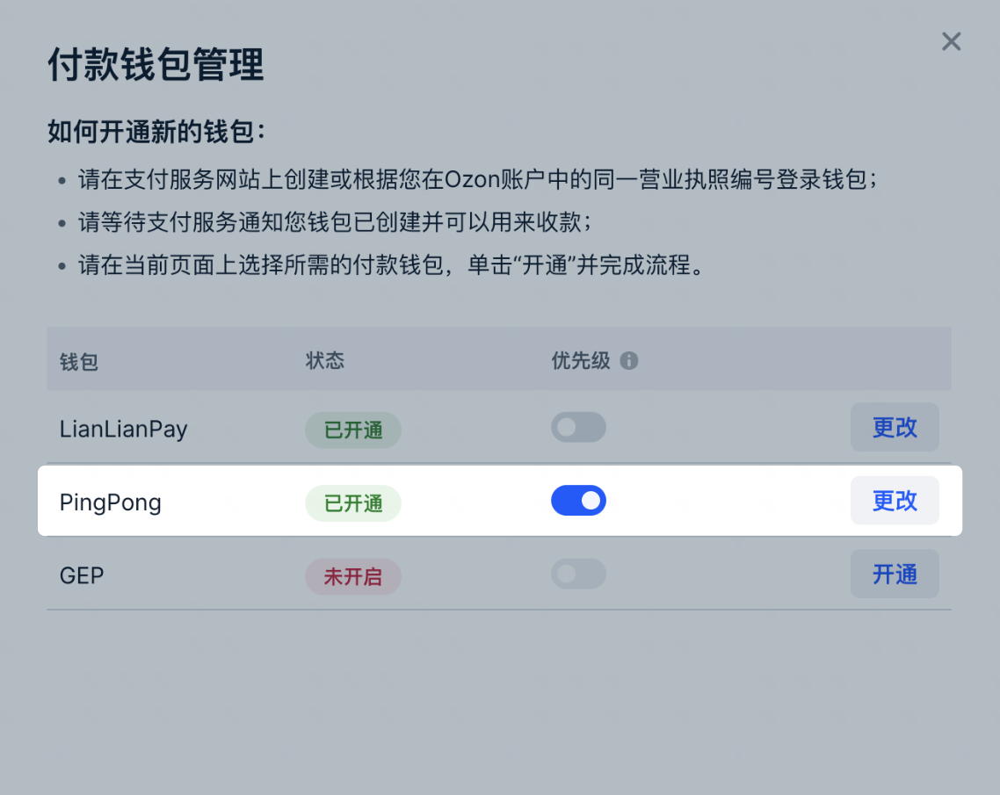
请注册 PingPong 企业帐户或登录到现有账户。请在 PingPong 中指出必要数据，将您的帐户链接到 Ozon 个人中心。在您开通PingPong钱包时，我们将为您分配一名个人管理员。
若您绑定的是现有的连连支付账户，填写详细信息后，我们将需要15分钟来更新您个人中心中的付款方式。 在此期间，请勿再次点击 转至PingPong 。若您注册新的连连支付账户，则必须进行验证。
这通常需要几天的时间。在此期间，请勿再次点击 转至PingPong 。 若验证持续时间超过一周，请确保您已提交所有必要的文件。 如果验证成功，您个人中心中的付款方式将会更新。
PingPong费率
PingPong佣金率为1.2%。
PingPong联系信息
电话: 4009969666
工作时间: 星期一至星期五9:00-22:00, 星期六至星期日9:00-18:00
开通PandaPay
PandaPay 只适用于中国大陆和香港选择人民币（CNY）作为支付货币的卖家。
要开通PandaPay方式，请在个人中心中进入 设置 → 合同 → 设置钱包 标签页，在 PandaPay 行点击 开通 。
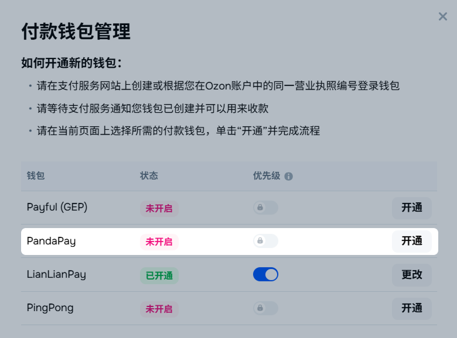
请注册 PandaPay 企业帐户或登录到现有账户。请在 PandaPay 中指出必要数据，将您的帐户链接到 Ozon 个人中心。
若您绑定的是现有的PandaPay账户，填写详细信息后，我们将需要15分钟来更新您个人中心中的付款方式。 在此期间，请勿再次点击 转至PandaPay 。若您注册新的PandaPay账户，则必须进行验证。
这通常需要几天的时间。在此期间，请勿再次点击 转至PandaPay 。 若验证持续时间超过一周，请确保您已提交所有必要的文件。 如果验证成功，您个人中心中的付款方式将会更新。
PandaPay费率
PandaPay佣金率为1.1%。
PandaPay联系信息
微信客服:
工作时间: 星期一至星期五9:00-19:00
{{< /tab >}}
如果您已开通电子钱包，您可以 在系统中切换钱包 或 开通其他支付系统 。
如果您的货币为卢布 (RUB)，您可以对其进行更改。为此请写信与 客服 取得联系。
要在常规时间内获得付款，请在以下适当的时间段内开通新钱包：
从第一笔付款到账日期起到本月15号之前。第一笔付款指的是从16号到上个月月末之间的付款。
从第二笔付款到账日期到月末之前。第二笔付款指的是本月1号到15号之间的付款。
切换钱包账户
Payful (GEP)和PandaPay钱包不支持切换。
要更改您的钱包账户，请在 设置→合同 → 设置钱包 部分选择并点击 更改 。
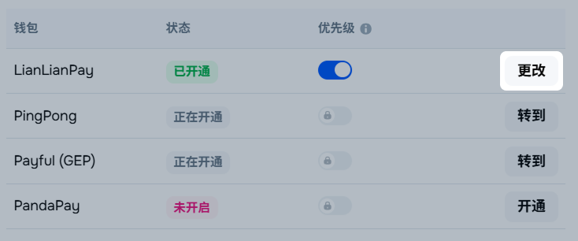
您可以从当月26日开始切换钱包账户，但最迟不得晚于月底前3天。例如，1月有31天，因此您可以在1月26日到1月29日（含1月26日和1月29日）期间切换。
优先支付系统
当您连接了多个支付系统时，可以选择一个优先支付系统，用于接收付款。优先系统只能设置一个，但可以随时无限次更改。
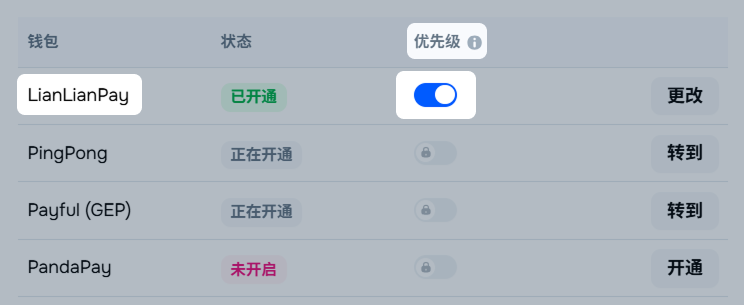
开通其他支付系统
要在支付系统中开通其他钱包，请在 设置 → 合同 → 设置钱包 标签页中选择它，然后点击 开通 。
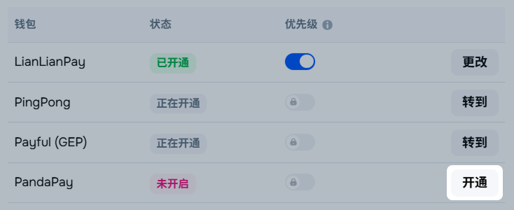
如果在连接新钱包时发生了错误，我们将继续向之前绑定的钱包发送付款。
备用银行信息
要接收付款，您可以添加备用银行信息。如果您在注册个人中心时输入了备用银行信息，它们将显示在“ 合同 部分。
添加银行信息
要输入备用银行信息，请在您的个人中心中转至 设置 → 合同 → 备用付款信息 ，然后单击 添加付款信息 。
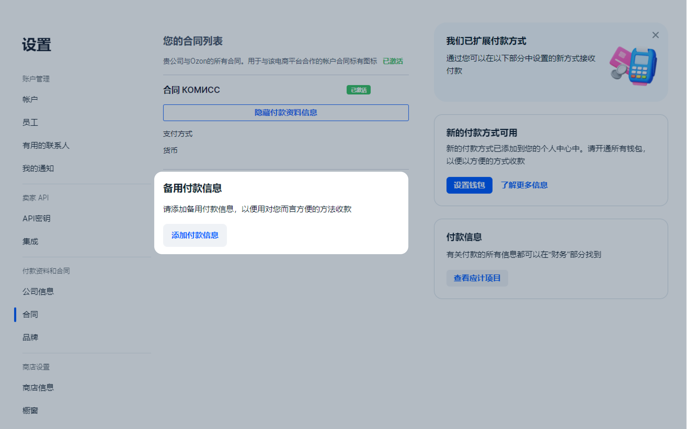
请填写以下字段：
结算账户 ;
货币 — 中国可使用人民币;
SWIFT ;
CNAPS — 选填字段。
有关银行的信息：名称、城市和地址，将自动填写。
请点击 保存 。银行信息将被发送验证。最多需要30分钟。验证后，银行信息将被保存。
编辑银行信息
从当月26日开始，您可以每天更改一次银行信息，但不得晚于月底前3天。例如，一月有31天，因此您可以在1月26至29日（含）更改银行信息。
要编辑备用银行信息，请在您的个人中心中转至 设置 → 合同 → 备用付款信息 ，然后单击 编辑 。
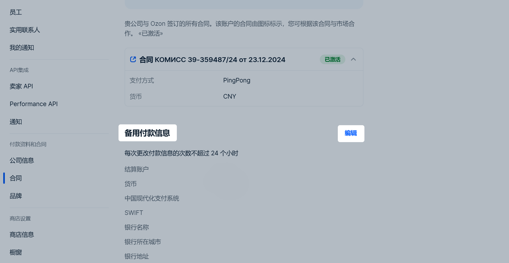
请更改银行信息并单击 保存 。银行信息将被发送验证。最多需要30分钟。 验证后，新的银行信息将被保存。
计算如何进行
应支付金额将以您在个人中心中指定的结算货币转账。 货币兑换按照Ozon的汇率进行。
每笔订单的交易信息都显示在 财务 → 应计 板块：
当个人中心里的订单状态转为“已送达”时，款项将发送到您的账户，同时将扣除Ozon 服务佣金。 您可以在 订单 板块找到订单状态信息。
在买家退货的情况下，商品金额将从您的账户中扣除，同时我们会将佣金退还给您。您需要向买家支付商品配送金额以及商品退还至仓库所需的运费。 Ozon 佣金及费率详情
您可以在 财务 → 付款 板块 找到所有付款（账户）列表。 那里有 Ozon 已为您加算的和即将为您加算的所有款项信息。
我们将每月两次向您的账户转款。
第一次付款包括16号之前的交易款项。Ozon 将在25号之前转款。
第二次付款包括从16号到本月最后一天的交易款项。Ozon 将在下个月的16号之前转款。
支付状态：
"正在生成" — 付款账单已准备就绪，但银行还没有确认账单或拒绝了账单。如果付款期限已过，而状态还没有改变，请与客服取得联系。
"等待付款" — 我们已将账单加入付款时间表中并将在计划日期转款。
"已付款" — 我们已经转款。如果款项长时间不到账，请与您的银行取得联系。
在个人账户中指定的日期 财政 → 付款 , 是大概的。 付款日期由合同建议书规定。
Ozon可以扣留：
应退还给客户的金额，由于订单取消或审查其投诉而产生；
正在审查的索赔下预留的金额；
应支付给Ozon的罚款和损失金额；
家退货支付的运费（争议解决支持买家的情况下）。
汇款最低金额
指定日期的最低付款金额取决于期间内的销售量和您合同中的货币种类：
6500人民币（CNY），
1000 美元（USD）— 如果合同货币为美元，
60000卢布（RUB）— 如果合同货币为卢布。
如果在当前付款期间商品销售金额没有达到要求的数值，那么付款将在金额达到所需指标的最近付款日期进行。
从2024年1月1日起，所有以美金为单位的付款均根据银行委托书执行当日俄罗斯联邦中央银行的交叉汇率转换为人民币。
未收到付款
如果您没有收到支付：
请确保报告周期内的支付金额超过了根据结算货币的最低金额。只有达到账户中的金额阈值，Ozon才会进行转账。
检查订单状态。付款仅针对具有“已交付”状态的订单。一旦买家收到订单，其状态将更改为“已签收”，并且商品的付款将显示在个人中心中。
检查个人中心中的银行信息。如果缺少任何数据，请填写。
银行处理支付、周末或假日可能会延长资金入账时间。 如果您无法理解支付延迟的原因，请联系 客服 。
如何手动查看上个月应付金额
请查看售出的商品金额，其中包括退货和Ozon佣金。为此请在个人中心转至 财务 → 文件 然后在 销售报告 中下载 商品销售报告 按月。所需金额将出现在 Total accrual (所有应计项目)中。
请接收Ozon向您提供的服务金额，例如将商品存放仓库、将商品配送给买家或在Ozon上进行广告宣传。为此，请在 “含附加服务的通用传输文件” 下载 卖家完工单（外发） 模块中和“Ozon Technologies”服务的 通用传输文件-1。
如果您在一个日历月内收到一次付款，我们将仅生成整个月的一份报告。如果有两次付款，我们将生成两份报告：
上半月交易时间为1日至15日；
下半月交易时间为1日至31日。
服务金额显示在 In total for payment (应付总额)字段中的 The cost of goods (works, services) property rights with tax — all (商品成本（工作、服务）、含税产权——总计)列中。
如果您收到两份报告，请在两份报告的 The cost of goods (works, services) property rights with tax — all (商品成本（工作、服务）、含税产权——总计)中的 In total for payment (应付总额)字段添加指示的值。这将是服务金额。
您将看到包括退货及 Ozon 佣金在内的付款金额。您需要从包括退货在内的已销售商品金额中去掉 Ozon 为您提供的服务金额。
如果您上一个月的 Ozon 服务费用比商品销售金额多，那么得出的金额可能会对于实际付款金额。为验证这一点，请使用计算该月付款金额的方法来算一下前几个月的付款金额。
想要得知 Ozon 应向您支付的月末金额，请从所得付款金额中减掉已经转给您的月初金额。
您可以使用 付款计算XLSX模板 来手动计算金额。
结账文件
每月5号之前 Ozon 生成下列文件：
商品销售报告。
“Ozon Technologies”服务的完工单——其中包含“Ozon Technologies”服务的费用信息，例如Analytics Premium订阅费用。
卖家完工单（外发）：
针对“Internet Solutions”——其中列明了商品销售代理佣金、配送费用和Ozon附加服务。
您将在5号之前收到文件，文件中包含上个月的交易。您可以在个人中心的 文件 板块查看。
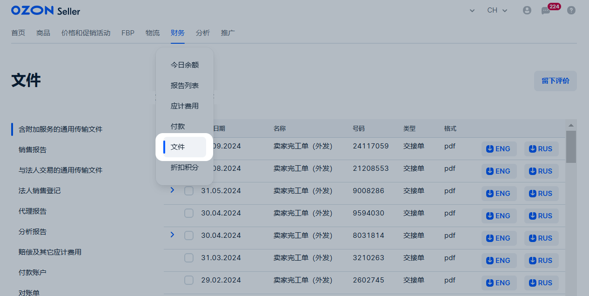
下载文件示例：
个人中心里的文件
您可以在 财务 → 文件 板块找到：
附加服务的通用传输文件；
销售报告；
销售报告详解；
“Internet Solutions”报告月份的完工单。
“Ozon Technologies”服务的通用传输文件-1。
“Internet Solutions”和“Ozon Technologies”的对账单。
分析报告；
赔偿金和其它应计项目；
给FBS的差异报告;
扣款通知和扣款报告。
1. 附加服务通用传输文件
“Internet Solutions”的卖家完工单（外发）。它显示的是用于支付Ozon服务的金额，比如商品交付、广告以及在Ozon 仓库中的商品存储。在文件生成时，销售佣金不被考虑在内。
卖家支出详细信息
“Ozon Technologies”服务的通用传输文件-1。反映“Ozon Technologies”服务的费用金额，例如Analytics Premium订阅费用。
2. 销售报告
商品销售报告 .
服务重新计费报告。它包含收单业务支付服务信息和合作伙伴执行人员完成的部分尾程物流信息。
转账报告。它显示的是以下金额：
因订单中商品不足而进行的扣费;
向买家退还的物流费用；
向买家提供的部分赔偿金。如果在报告期内没有进行过任何一项操作，那么将不会生成报告。
积分结算奖金报告。这份报告详细列出了转换为现金并转给您的积分数量。
在对账单出现在您个人中心的15个工作日内如果您没有拒收，那么将视为您已接受该对账单。在此之后将无法再提出争议。
3. 分析报告
相互结算报告。它显示的是月内与Ozon的所有相互结算——付款、收入、支出和赔偿金。
服务金额和销售支出报告。它包含上个月已销售商品的信息——已交付商品、已退还商品、已取消商品以及无人认领商品。支出中包括：
销售佣金；
物流支出；
退货、取消以及订单无人认领时的支出。
外币付款报告。该报告以合同货币形成并显示组成付款金额的所有操作——从账户的扣款以及应计金额。该报告是付款的随附文件——银行需要它来将付款记入卖家账户。如果您以卢布形式收取付款，那么外币报告将不会生成。
4. 赔偿金和其它应计费用
赔偿金报告。它显示的是上个月的商品赔偿金信息：
残次品冲销；
未交付冲销；
在交付过程中销毁商品的冲销；
索赔费用。
5. 对账单
我们推出了测试版的账单自动生成功能。在几个月之内它将出现在所有卖家的个人中心。第一笔对账单的覆盖范围为合作之初至上一季度尾期。
每个季度结束后，我们将在下个月15日前生成“Internet Solutions”和“Ozon Technologies”前3个月的对账单。
您可以在个人中心的 财务 → 文件 → 对账单 板块下载对账单。
在对账单发布后的15个工作日内您需要进行下列两种操作之一：
如果没有问题或金额方面的分歧，请接收对账单。在个人中心点击 接收 。
如果有问题或金额方面的分歧，请拒收对账单。在个人中心点击 拒收 。在这种情况下系统将自动向客服发送请求。
在对账单出现在您个人中心的15个工作日内如果您没有拒收，那么将视为您已接受该对账单。在此之后将无法再提出争议。
6. 扣款与付款账单
扣款通知。反映从“Internet Solutions”余额中为“Ozon Technologies”代扣的款项。每日生成。如需获取文件，请在 “财务” → “文件” → “扣款与付款账单” 部分选择期间，并点击 “下载压缩文件” 。
扣款报告。反映从“Internet Solutions”余额中为“Ozon Technologies”代扣的款项。每月生成一次。
如果付款信息已更改
如果您的付款详细信息已更改，或者您想切换到其他收款方式，请在您的个人中心中联系支持服务或写信至 marketplace.crossborder@ozon.ru 。 请在您的申请中附上完整的 Excel 表格。 在个人中心中创建支持服务的申请时，选择 财务 主题， 更改银行详细信息 子主题。
付款信息中的收款方名称必须与您在Ozon平台上注册的公司法定名称一致。否则系统会拒绝接受此类文件。当信息有误时，系统会将款项退还。
给银行的信息应以英语或俄语提供。如果银行详细信息的货币种类为RUB，那么所有字段都应以西里尔文填写。如果银行详细信息的货币种类不是RUB，那么所有字段都应以拉丁文填写。